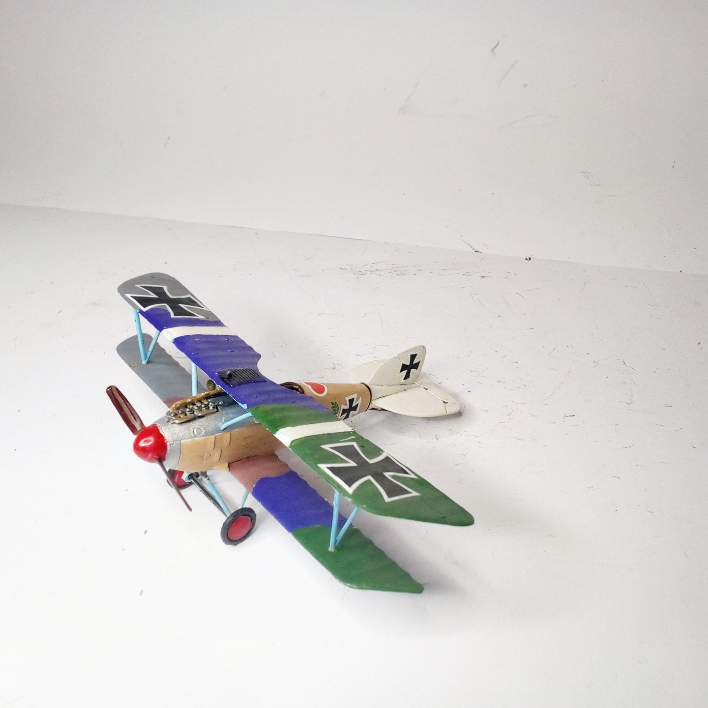
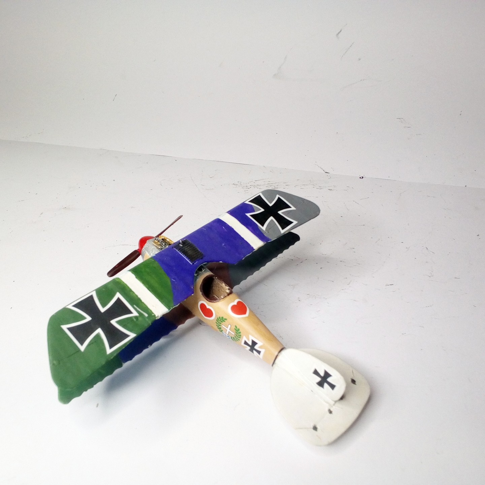

Aerei · scale model archive
Albatross D III
Albatross D III — Kit: Revell. Scale 1/72 Jagdstaffel (Jasta) 2 Boelcke (Lt. Werner Voss) Juni 1917 World War 1»Western Front - Pronville FR, very…

Photo gallery

English description
Scale 1/72
Jagdstaffel (Jasta) 2 Boelcke (Lt. Werner Voss) Juni 1917 World War 1»Western Front - Pronville FR, very colorful model, fuselage tries to depict natural wood
#1/72 #Revell
Descrizione italiana
Jagdstaffel (Jasta) 2 Boelcke (Lt. Werner Voss) giugno 1917 World War 1»Western Front - Pronville FR, very colorata modello, fusoliera tries una depict natural wood.